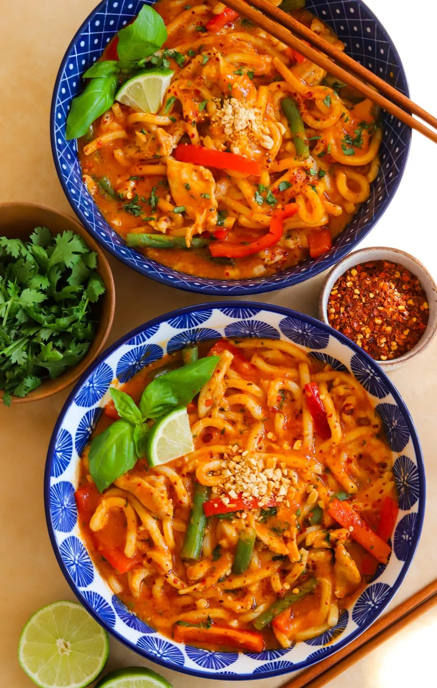
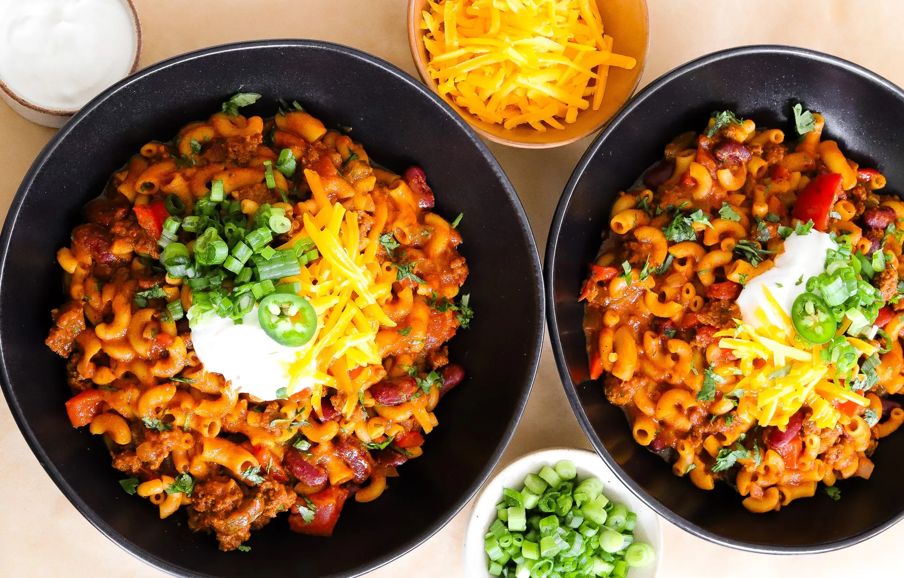

Jamie Ray's
MORIBYAN'S KITCHEN

DINNER/MAIN COURSE
SKILLET SHRIMP FAJITAS AND CILANTRO RICE
PREP TIME: 10 MINUTES COOK TIME:
20 MINUTES TOTAL TIME: 30 MINUTES
YIELDS: 3 TO 4
When you're craving something packed with bold flavor but still
effortless to make, these shrimp and fajita skillets hit the spot.
Juicy shrimp and sizzling charred veggies come together with a
drizzle of honey-chipotle sauce and a bright squeeze of lime for
the perfect bite. Add some cilantro lime rice, avocado, and sour
cream and you've got a dinner that is as beautiful and colorful as
it is delicious!
STOVETOP METHOD
OVEN METHOD
ONE PAN SHRIMP FAJITAS AND RICE
INGREDIENTS:
SHRIMP FAJITAS
- 1 pound large raw shrimp, deveined and tail removed
- 1 tablespoon olive oil
- 1 red bell pepper, sliced
- 1 green bell pepper, sliced
- 1 yellow bell pepper, sliced
- 1/2 red onion, thinly sliced
- salt and pepper to taste
MARINADE
- 2 tablespoons olive oil
- 3 to 4 tablespoons adobo paste
- 2 teaspoons fresh garlic, minced
- 2 teaspoons chilli powder
- 1 teaspoon coriander
- 1 teaspoon paprika
- 1 teaspoon oregano
- 1/2 teaspoon onion powder
- 1/2 teaspoon cumin
- 1/2 to 3/4 teaspoon salt, adjust to taste
- 2 tablespoons of honey
FOR ASSEMBLY (optional)
- cilantro lime rice
- sour cream
- avocado
- lime wedge
INSTRUCTIONS:
PREPARE THE SHRIMP
-
Peel, devein, and remove the tails from the shrimp. Pat dry with
paper towels to help with searing later.
MAKE THE SAUCE
-
In a bowl, combine olive oil, adobo paste, garlic, chili powder,
coriander, paprika, oregano, onion powder, cumin, salt,
and honey. Set aside for later
COOK THE FAJITAS
-
Heat a small amount of olive oil in each individual skillet over
medium-high heat.
-
Add a portion of sliced bell peppers and onions to each skillet.
-
Sprinkle with salt and pepper. Saute for about 5-6 minutes until
they are softened and charred around the edges, about 75%
cooked.
- Push the veggies to the side of each skillet.
SEAR THE SHRIMP
-
Add the shrimp to the empty side of each skillet. Let them
sear undisturbed for 2-3 minutes until they turn pink and
develope a light crust.
- Flip and cook for another 2-3 minutes until fully cooked.
COMBINE AND ADD SAUCE
-
Once the shrimp are cooked, toss them together with the
vegetables in each skillet. Drizzle a bit of the reserved
marinade over everything and stir to coat the shrimp and veggies
in the flavorful sauce.
-
Add a squeeze of fresh lime juice to each skillet and toss again
to brighten the flavors.
-
Finish off each skillet with some optional add-ons like cilantro
lime rice, avocado, sour cream, or even cheese!
STOVETOP METHOD
Start by heating a bit of olive oil in your skillet over medium-high
heat. Once it's nice and hot, add the bell peppers and onions,
seasoning them lightly with salt and pepper. Sauté them until
they're softened and beginning to get those delicious charred edges,
about 3/4 of the way cooked. Don't rush this part—the char is where
the flavor comes from! Once they're nearly done, push the veggies to
one side of the skillet to make room for your shrimp.
Add the shrimp to the empty side of the skillet and let them sear
for 2-3 minutes on each side until they're golden and cooked
through. Shrimp cook quickly, so keep an eye on them to make sure
they don't overcook. Once the shrimp are done, toss them together
with the veggies and drizzle a little bit of the marinade over
everything. Give it a final toss and let everything sizzle for
another minute so the flavors can really blend. Finish with a
squeeze of fresh lime juice for that tangy kick.
OVEN METHOD
If you're looking to use the oven, this recipe works beautifully
with just a few adjustments. Preheat your oven to 400°F. On a baking
sheet, toss your bell peppers, onions, and shrimp with the
marinade, making sure everything is coated well. Spread the veggies
and shrimp in a single layer, and cover the sheet with foil to
help everything soften and cook evenly. Roast for about 15-20
minutes, checking halfway through to toss everything. Once the
shrimp are pink and the veggies are tender, remove the foil and
let it cook for another 5 minutes to get some nice color on the
edges.
Covering the fajitas with foil while they cook helps soften the
veggies and keep the shrimp juicy, but uncovering them at the end
gives everything that perfect roasted finish. Once done, squeeze
fresh lime juice over everything and give it a quick toss before
serving.
MAIN COURSE-SOUP
RED CURRY UDON NOODLE SOUP
PREP TIME: 15 MINUTES
COOK TIME: 30 MINUTES
TOTAL TIME: 45 MINUTES
YIELDS:3 TO 4
This red curry udon noodle soup is the ideal comfort food when
you're feeling under the weather or just want a bowl of something
cozy and flavorful. Creamy coconut milk, spicy red curry, tender
poached chicken, and slurp-worthy udon noodles come together with
vibrant veggies and fresh herbs. The best part? It's easy to make
with flexible ingredients and offers plenty of room for creativity

INGREDIENTS:
-
1 pound boneless, skinless chicken thighs, cut into thin pieces
- 2 tablespoons vegetable or coconut oil
- 1 tablespoon ginger paste
- 1 tablespoon minced garlic
- 1/4 cup red curry paste, more to taste
- 1/2 tablespoon fish sauce
- 13-ounce can coconut milk
- 1 1/2 to 2 cups chicken or vegetable broth, more to taste
- 1 tablespoon lime juice
- 1 to 2 tablespoons brown sugar
- 1/2 to 1 teaspoon red pepper flakes
- salt, to taste
- 1 whole red bell pepper, thinly sliced
- 1 cup green beans, chopped
- 2 tablespoons thai basil, chopped
- 1 tablespoon cilantro, finely chopped
- 12 ounces cooked udon noodles
INSTRUCTIONS:
-
Cook the Aromatics: In a large pot, heat oil over medium
heat. Add the ginger paste and minced garlic, sautéing for 1-2
minutes until fragrant.
-
Add Curry Paste: Stir in the red curry paste and cook for
another 1-2 minutes to let the flavors develop.
-
Make The Broth: Pour in the coconut milk, fish sauce, and
1 1/2 to 2 cups of chicken or vegetable broth (starting with
1 1/2 cups, adding more if you prefer a thinner soup). Add the
lime juice, brown sugar, red pepper flakes, and salt to taste.
Stir to combine and bring to a simmer.
-
Poach the Chicken: Add the sliced chicken thighs directly
to the simmering broth. Allow the Chicken to cook for 5-7
minutes, or until cooked through and tender.
-
Add Vegetables: Stir in the red bell pepper and green
beans. Simmer for an additional 5-7 minutes, until the
vegetables are tender but still have a light crunch.
-
Finish with Herbs and Noodles: Add the thai basil,
cilantro, and cooked udon noodles. Stir and cook for another
1-2 minutes, until the noodles are warmed through.
-
Serve: Taste the soup and adjust seasoning as needed.
Ladle into bowls and garnish with additional hers if desired.
Enjoy hot!

MAIN COURSE
CHILI MAC
PREP TIME: 15 MINUTES
COOK TIME: 30 MINUTES
TOTAL TIME: 45 MINUTES
YIELDS: 6 TO 7
This chili mac is like a warm hug in a bowl, combining the bold
flavors of chili with the comforting heartiness of pasta! With a
rich blend of spices, hearty beef, and colorful veggies all mingling
together, each bite is a delicious explosion of flavor. It's the
perfect dish to savor while curled up on the couch—just don't blame
me if you find yourself going back for seconds (or thirds)!

INGREDIENTS:
- 1 Tablespoon olive oil
- 1 whole red bell pepper, diced
- 1 jalapeno, deseeded and diced
- 1/2 yellow onion, diced
- 1 1/2 tablespoon garlic, minced
- 1 pound 90/10 ground beef
- 2 1/2 tablespoons chili powder
- 2 teaspoons smoked paprika
- 2 teaspoons cumin
- 2 teaspoons coriander
- 1 1/2 tablespoons oregano
- 1 teaspoons salt, more or less to taste
- 1/2 teaspoon black pepper
- 1/2 teaspoon onion powder
- Pinkch of cayenne powder, to taste
- 3 cups beef broth, more as needed
- 2 tablespoons light brown sugar
- 15-ounce can Fire-roasted diced tomatoes
- 15-ounce can tomato sauce
- 1/2 tablespoon Worcestershire sauce
- 15-ounce can kidney beans, rinced and drained
- 12-ounce elbow pasta
- 1 to 2 tablespoons cilantro, finely chopped
- 1/2 cup cheddar cheese, shredded
- Sour cream, optional topping
- Chopped green onions, optional topping
INSTRUCTIONS:
-
Heat Olive Oil: In a large pot heat some olive Oil
over medium heat.
-
Saute Vegetables: Add diced red bell pepper, deseeded
and diced jalapeno, and diced yellow onion. Saute until
softened.
-
Add Garlic: Stir in minced garlic and cook for
another minute until fragrant.
-
Brown the Beef: Add lean ground beef to the pot.
Break it apart and cook until browned and no longer pink.
-
Mix in Spices: Add chili powder, smoked paprika,
cumin, coriander, oregano, salt (adjust to taste), black
pepper, Onion powder, and a pinch of cayenne powder to
taste. Stir and cook for 1 minute to bloom spices.
-
Add Liquids: Poor in beef broth, then add light brown
sugar, a can of Fire-roasted diced tomatoes, a can of tomato
sauce, and worcestershire sauce. Bring to simmer.
-
Incorporate Beans and Pasta: Stir in rinced and
drained Kidney beans and uncooked elbow pasta.
-
Cook Pasta: Cover the pot and let it cook, stirring
occasionally, until the pasta is tender and has absorbed
most of the liquid.
-
Add Finishing touches: Once the pasta is cooked,
stir in finely chopped cilantro and shredded cheddar cheese
until melted.
-
Serve: Top it off with a dollop of sour cream, green
onions, and a bit more cheddar cheese. Serve immediately
and enjoy your delicious chili mac!